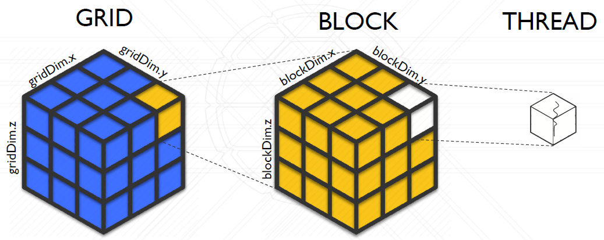
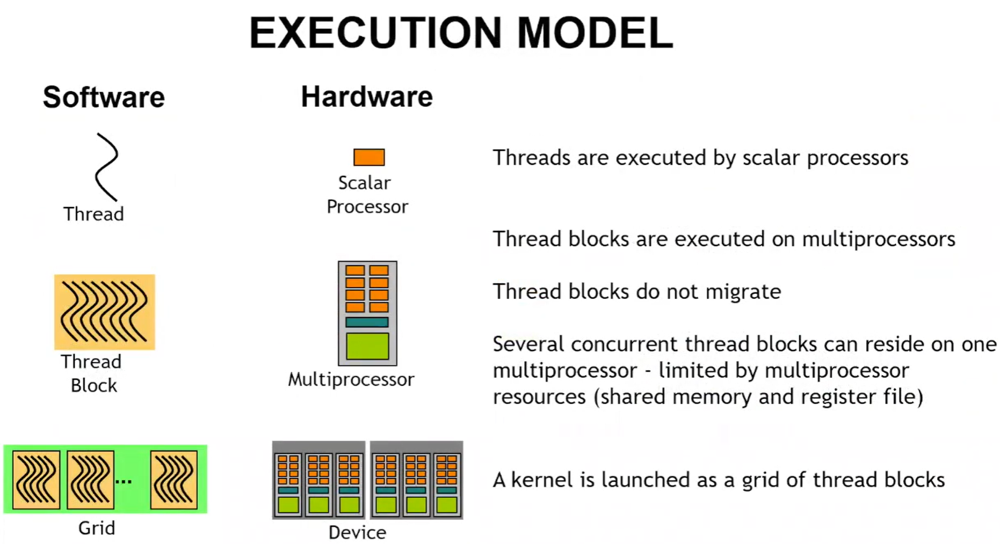
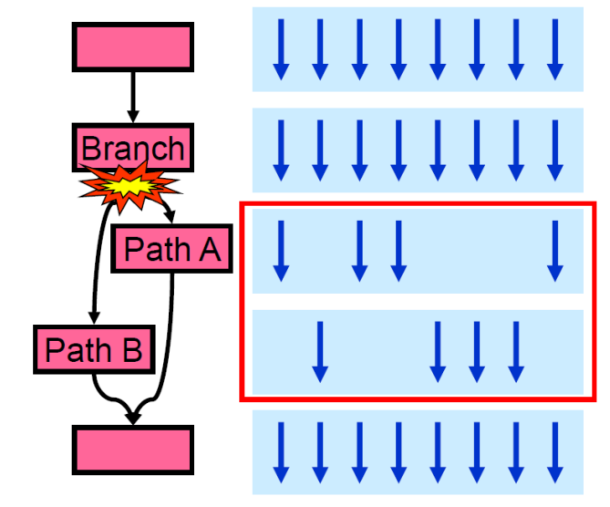
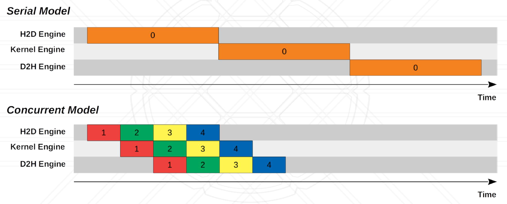
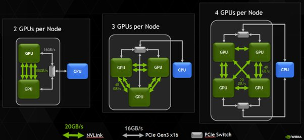
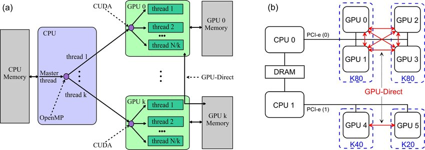
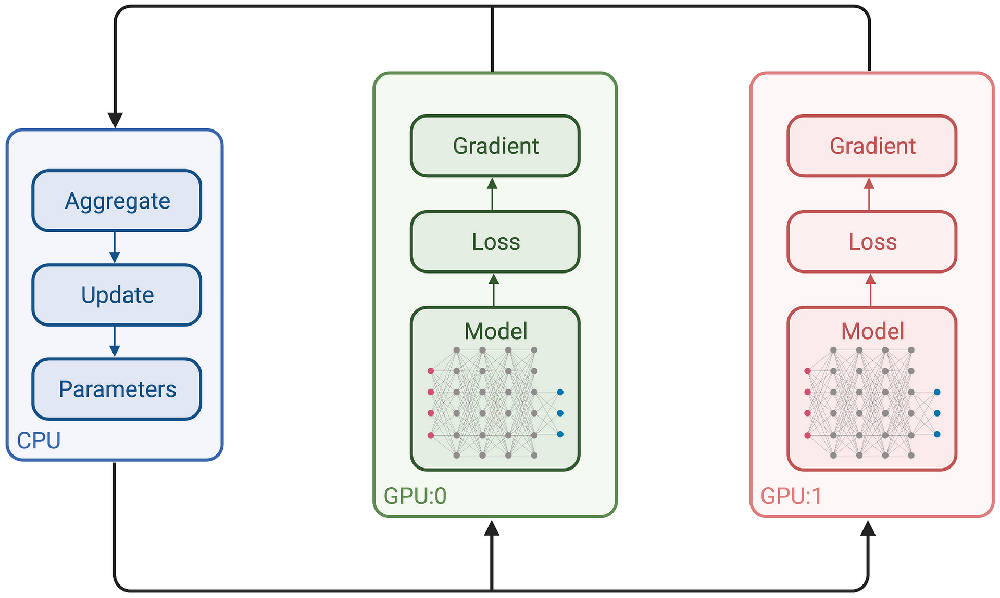
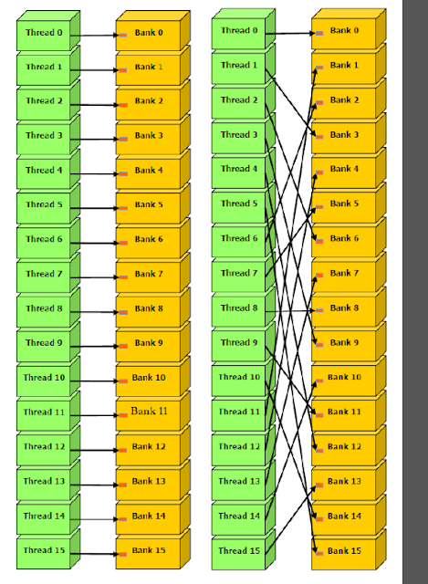
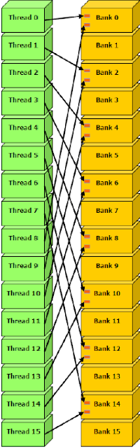
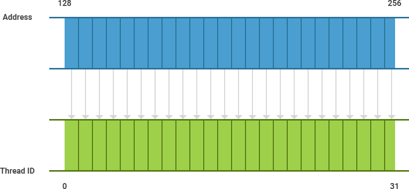

9. Advanced Accelerators
Overview
Welcome to Unit 9 of HIPC.
In the previous unit, we introduced the fundamentals of GPU hardware and CUDA programming. While we only scratched the surface of CUDA’s capabilities, there remains significant untapped potential. In this unit, we will explore more advanced aspects of CUDA, focusing on performance considerations, scheduling strategies, and memory models.
Before proceeding, ensure you have thoroughly understood the material from the previous unit, as a strong foundation is crucial for tackling the topics in this unit.
This unit will cover the following topics:
- Advanced Scheduling
- Advanced Execution
- Advanced Memory Models
- Performance Profiling, Tuning, and Optimisation
Advanced Scheduling
Introduction
Before we begin, let us recap the key concepts covered at the end of the previous unit regarding thread block organisation. Kernel configuration can be two-dimensional or even three-dimensional, which is particularly beneficial for algorithms operating on 2D or 3D data layouts. To access the second and third dimensions, use the .y and .z attributes, respectively, in conjunction with a 3-vector (dim3).
To illustrate this layout:

Figure 1: 3D Kernel Indexing
The thread-block-grid hierarchy constitutes a fundamental aspect of the CUDA execution model from a software perspective. As previously discussed, this software abstraction simplifies GPU programming by shielding the programmer from the intricacies of the underlying hardware. Moreover, it enhances compatibility, ensuring that a program designed for one GPU can function seamlessly on another, despite differences in hardware specifications.

Figure 2: Execution Model of CUDA
Mapping from the software abstraction into the hardware is done by CUDA, with a process called scheduling. Scheduling decides when and how to execute which thread on which SM/CUDA core.
Warp Scheduling
In CUDA, threads are scheduled in group of 32, referred to as warp, to improve efficiency and reduce the scheduling and instruction dispatching overhead. A warp, sometimes called a sub-group, consists of 32 threads within a thread block, all of which execute the same instruction simultaneously on a Streaming Multiprocessor (SM).
Organising threads into warps offers several key advantages:
- Reduces hardware manufacturing costs
- Lowers runtime energy consumption
- Enables the coalescing of memory accesses (which will be discussed later)
Once a thread block is launched on a Stream Multiprocessor (SM), all its warps remain resident until their execution is complete. A new block will not be launched on the SM until there is sufficient free shared memory and an adequate number of available registers to accommodate all the warps.
If the currently executing warp stalls (e.g., while waiting for a memory request or access to an under-pressure functional unit), the scheduler suspends this warp and executes the next ready warp. This process, known as context switching, transfers control from one warp to another. The data associated with the suspended warp remains in the register file, allowing for quick resumption once its operands become ready.
As all register values and the program counter (PC) for a warp are stored in the register file, and shared memory (and cache) is accessible to all warps within a thread block, context switching on a GPU is significantly more lightweight than traditional CPU context switching.
If multiple warps are eligible for execution, the parent SM employs a warp scheduling policy to determine which warp is assigned the next instruction. Several scheduling algorithms are commonly used:
- Round Robin (RR): Instructions are fetched in a round-robin fashion. This approach ensures that SMs remain busy and avoids wasting clock cycles due to memory latencies.
- Least Recently Fetched (LRF): Under this policy, priority is given to the warp that has waited the longest since its last instruction fetch.
- Fair (FAIR): This policy ensures that all warps receive an equitable opportunity for instruction fetching. The scheduler prioritises the warp with the fewest instructions fetched so far.
- Thread block-based CAWS (criticality-aware warp scheduling): This policy focuses on improving the overall execution time of thread blocks. It allocates more resources to the warp expected to take the longest to execute. By prioritising the most critical warp, CAWS accelerates the completion of thread blocks, enabling resources to become available more quickly for other tasks.
Note
Warps can be executed by the SMs in any order, thus assumptions on which one runs first should be avoided when programming.
In order to take advantage of the warp architecture, we need to understand (a) how to manage control flow divergence (next section) and (b) how to coalesce memory accesses (will be discussed in advanced memory). If each thread in a warp takes a different execution path or if each thread accesses significantly divergent memory, then the benefits of the warp architecture are lost and performance will be significantly degraded.
Block Partitioning
We now know that a warp consists of 32 threads, but how are these threads selected? Generally, they are determined by the thread index, with each warp comprising 32 threads with consecutive threadIdx values. However, certain complexities arise depending on the dimensions of the thread block, as outlined below:
- For 1D thread blocks:
- Only
threadIdx.xis used,threadIdx.xvalues within a warp are consecutive and increasing. - For a warp size of 32:
- warp 0: thread 0 ~ thread 31
- warp 1: thread 32 ~ thread 63
- warp n: thread 32 × n ~ thread 32(n + 1) - 1
- For a block of which the size is not a multiple of 32:
- the last warp will be padded with extra threads to fill up the 32 threads.
- Only
- For 2D thread blocks:
- The dimensions will be projected into a linear order before partitioning into warps
- Determine the linear order: place the rows with larger y and z coordinates after those with lower ones.
- For 3D thread blocks:
- First place all threads of which the
threadIdx.zvalue is 0 in to a linear order. Among these threads, they are treated as a 2D block. - Example: a 3D thread block of dimensions 2 × 8 × 4 (total 64 threads):
- warp 0: T(0,0,0) ~ T(0,7,3)
- warp 1: T(1,0,0) ~ T(1,7,3)
- First place all threads of which the
Dealing with Divergence
Conditional branch instructions can lead to thread divergence. However, a GPU’s architecture allows only one program counter (PC) to be active within a warp at any given time. This naturally raises the question: what occurs when divergence happens within a warp?
Assuming we have something in a kernel function as:
if (some_condition) {
do_stuff_A();
} else {
do_stuff_B();
}
The if condition would cause divergence based on whether some_condition is satisfied or not. For example, if some_condition checks whether the working thread is odd-numbered, then half of the threads will run do_stuff_A() and the other half are masked (this means consuming resources without actually running anything). After that is finished, the warp starts to execute the next instruction, in which case the even-numbered threads will execute do_stuff_B(), while the odd-numbered threads are masked. This is illustrated as follows:

Figure 3: Branch Divergence
You may already notice this is not particularly efficient as the total execution time is then $\textrm{total_time} = \textrm{t}(\textrm{Path_A}) + \textrm{t}(\textrm{Path_B})$, instead of the longest time $\max(\textrm{t}(\textrm{Path_A}), \textrm{t}(\textrm{Path_B}))$. Things can be done differently if the conditional is such that all work-items in the same warp take the same path. Assuming we can make the divergence on a warp-basis, say we do things differently based on if it is an odd-numbered or an even-numbered warp, then it is possible for these warps to be executed concurrently, and without waiting and masking inside a warp.
Dynamic Parallelism
Dynamic Parallelism is an extension of the CUDA programming model that enables a CUDA kernel to directly create and synchronise new workloads on the GPU. This feature allows the dynamic creation of parallel threads during runtime, based on decisions driven by the incoming data. By leveraging the GPU’s hardware schedulers and load balancers, this extension facilitates the generation of parallel threads inline within a kernel, optimising execution dynamically at runtime.
Note
Dynamic parallelism is only supported by devices with Compute Capability >= 3.5.
The discussion of dynamic parallelism is slightly beyond what we will deliver here due to its complexity. However, if you are interested in dynamic parallelism on a GPU, more information can be found in the CUDA Programming Guide.
Advanced Execution (Concurrency)
Asynchronous Execution
Concurrency through asynchronous execution can significantly enhance throughput by minimising latency and establishing a pipeline. Asynchronous execution enables multiple CUDA operations to occur simultaneously, allowing data transfer and kernel execution to overlap efficiently.

Figure 4: Concurrent vs Serial Model
Asynchronous execution in CUDA is based on a Concurrent Model, which is done through Streams. In CUDA, streams can be defined using the API cudaStreamCreate():
cudaStream_t stream[2];
for (int i = 0; i < 2; ++i)
cudaStreamCreate(&stream[i]);
float* hostPtr;
cudaMallocHost(&hostPtr, 2 * size);
Once we have defined a stream, we can then use asynchronous data transfers (requires page-locked host memory, i.e., memory allocated with cudaMallocHost(...)):
cudaStreamCreate(&stream1);
cudaStreamCreate(&stream2);
cudaMemcpyAsync(dst1, src1, size, dir, stream1);
kernel<<<grid, block, 0, stream1>>>(…);
cudaMemcpyAsync(dst2, src2, size, dir, stream2);
kernel<<<grid, block, 0, stream2>>>(…);
Finally, we can destroy the streams with cudaStreamDestroy():
for (int i = 0; i < 2; ++i)
cudaStreamDestroy(stream[i]);
Synchronisation of Streams
With asynchronous execution, it is important to synchronise the threads to ensure data is properly transferred or processed, and to reduce race conditions. For CUDA streams, synchronisation can be done explicitly with:
-
cudaDeviceSynchronize()waits until all preceding commands in all streams of all host threads have been completed. -
cudaStreamSynchronize()takes a stream as a parameter and waits until all preceding commands in the given stream have been completed. It can be used to synchronise the host with a specific stream, allowing other streams to continue executing on the device. -
cudaStreamWaitEvent()takes a stream and an event as parameters (see Time a CUDA Program later in this unit to see how to define an event) and makes all the commands added to the given stream after the call tocudaStreamWaitEvent()delay their execution until the given event has been completed. -
cudaStreamQuery()provides applications with a way to know if all preceding commands in a stream have been completed.
There will also be implicit synchronisation if two streams cannot run concurrently, for example, a page-locked host memory allocation or a device memory allocation is done on the host thread between the streams.
Multiple GPUs
Another approach to achieving concurrency is through the use of multiple GPUs. The growing demand for resource-intensive applications, such as Large Language Models (LLMs), necessitates additional CUDA cores and greater GPU memory. To meet these requirements, scaling GPUs becomes essential, enabling higher throughput and support for larger applications. Multi-GPU systems can be constructed in various ways, primarily determined by interconnect options. For instance, NVIDIA offers technologies such as NVLink and NVSwitch for interconnecting their GPUs efficiently.

Figure 5: Multiple GPUs
You can find more information on NVLink and NVSwitch here.
One of the examples to utilise multiple GPUs is the OpenMP-CUDA framework, which has a two-level scheme of parallelisation:

Figure 6: (a) The two-level scheme of parallelization with OpenMP-CUDA. (b) Architecture 2×CPU + 6×GPU.
Below is another example of TensorFlow using multiple GPUs in training a Neural Network. The gradient losses are aggregated and used to update the model parameters:

Figure 7: TensorFlow with Multiple GPUs
Advanced Topics on Memory
Shared Memory
Recall the memory structure in CUDA, we have local, shared, and global memory, each of which can be accessed by different groups of threads:
- Local memory
- local thread only
- Shared memory
- threads in block
- Global memory
- all threads
Shared memory has much less latency than the global memory, and can be accessed by all the threads in a block. To use the shared memory, we rely on the following:
-
__shared__: Annotation that denotes shared memory -
__syncthreads(): Synchronises all threads in a block
An example of using (static) shared memory is given below, for a reverse function:
__global__ void Reverse(int *d, int n)
{
__shared__ int s[64];
int t = threadIdx.x;
int tr = n-t-1;
s[t] = d[t];
__syncthreads();
d[t] = s[tr];
}
Since many threads access shared memory simultaneously, the memory is divided into banks to prevent conflicts and ensure high bandwidth. Each bank can handle one address per cycle, enabling the memory to support as many concurrent accesses as there are banks. However, if multiple threads attempt to access the same bank simultaneously, a bank conflict occurs, causing these conflicting accesses to be serialised.
When there are no bank conflicts, memory accesses can be run in full parallel:

Figure 8: Bank conflicts free
If two or more threads access the same memory bank, a bank conflict occurs. For example, consider Figure 9 below. In the illustrated memory access pattern, it is evident that two threads within a warp access the same bank memory location – for instance, thread 0 accessing bank 0 and thread 8 also accessing bank 0, and so forth. Such overlapping requests must be serialised, resulting in what is referred to as a 2-way bank conflict.

Figure 9: 2-way bank conflicts
For devices of compute capability 2.0, the warp size is 32 threads and the number of banks is also 32. Devices of compute capability 3.x have configurable bank size, which can be set using cudaDeviceSetSharedMemConfig() to either four bytes (cudaSharedMemBankSizeFourByte, the default) or eight bytes (cudaSharedMemBankSizeEightByte). Setting the bank size to eight bytes can help avoid shared memory bank conflicts when accessing double precision data.
Here is a very useful YouTube video on shared memory and bank conflicts by Peter Messmer from NVIDIA.
Memory Coalescing
In CUDA, memory accesses are called coalesced if all 32 threads in a warp access a contiguous chunk of memory. The following image shows coalesced memory access by all threads of a warp.

Figure 10: Memory Coalescing
Coalesced memory accesses benefit from caching and reduced bank conflicts. If the memory is un-coalesced, potentially it will issue 32 sequential loads, which would greatly reduce the memory performance.
Unified Memory
From Compute Capability 3.0+ and CUDA 6.0+, NVIDIA introduced a concept called unified memory:
- Unified Memory creates a pool of managed memory that is shared between the CPU and GPU and accessible to both using a single pointer.
- Data is on both GPU and CPU and the system automatically migrates data allocated in Unified Memory between host and device.
- This incurs a small overhead.
You can allocate unified memory using the cudaMallocManaged() function. For example,
int main(int argc, char *argv[]) {
float *data;
cudaMallocManaged(&data, dataSize * sizeof(float));
...
cudaFree(data);
...
}
More information on unified memory can be found here.
Profiling and Performance Tuning
Time a CUDA program
A CUDA program can be timed using high-precision CPU timers, such as clock_gettime(). However, since CUDA functions execute asynchronously with the CPU, CPU-based timers may not always provide accurate measurements of the actual start and completion points of CUDA operations. To achieve more precise timing, CUDA provides a built-in event-based timer specifically designed for this purpose.
The event timer measures the elapsed time between two events. An event can be created with cudaEventCreate():
cudaEvent_t start, stop;
cudaEventCreate(&start);
cudaEventCreate(&stop);
and destroyed with cudaEventDestroy():
cudaEventDestroy(start);
cudaEventDestroy(stop);
After an event is created, one can record the event with cudaEventRecord():
cudaEventRecord(cudaEvent_t event, cudaStream_t stream = 0)
Below is an example of how to time a code using cudaEventElapsedTime():
cudaEvent_t start, stop;
float time;
cudaEventCreate(&start);
cudaEventCreate(&stop);
cudaEventRecord(start, 0);
kernel<<<grid,threads>>> (d_odata, d_idata, size_x, size_y, NUM_REPS);
cudaEventRecord(stop, 0);
cudaEventSynchronize(stop);
cudaEventElapsedTime(&time, start, stop);
cudaEventDestroy(start);
cudaEventDestroy(stop);
Profiling with nvprof
The nvprof profiling tool is a component of the Nsight Systems performance analysis tool that enables you to collect and view profiling data from the command-line. nvprof enables the collection of a timeline of CUDA-related activities on both CPU and GPU, including kernel execution, memory transfers, memory set and CUDA API calls and events or metrics for CUDA kernels. Profiling options are provided through command-line options. Profiling results are displayed in the console after the profiling data is collected, and may also be saved for later viewing by either nvprof or the Visual Profiler.
Note
nvprofhas been deprecated for devices with Compute Capability > 7.0. For the lab PCs, as the graphic card is CC==6.1, we will stick withnvprof, by simply remove the leadingnsysfrom the following examples. For these newer GPUs (on Viking), you should use Nsight Systems (nsys) instead for profiling. Nsight Systems provides improved performance analysis capabilities and is the recommended profiling tool for modern NVIDIA GPUs. All the instructions below assumensys.
To use nvprof, simply in a new command line:
$ nsys nvprof [options] [application] [application-arguments]
The nvprof command takes options, the name of the application, and then any parameters that need to be passed to the application. The most useful options for nvprof is --print-gpu-trace, which prints individual kernel invocations (including CUDA memcpys/memsets) and sorts them in chronological order. In event/metric profiling mode, it shows events/metrics for each kernel invocation.
Below is an example output from nvprof:
$ nsys nvprof ./matrixMul
[Matrix Multiply Using CUDA] - Starting...
==27694== NVPROF is profiling process 27694, command: matrixMul
GPU Device 0: "GeForce GT 640M LE" with compute capability 3.0
MatrixA(320,320), MatrixB(640,320)
Computing result using CUDA Kernel...
done
Performance= 35.35 GFlop/s, Time= 3.708 msec, Size= 131072000 Ops, WorkgroupSize= 1024 threads/block
Checking computed result for correctness: OK
Note: For peak performance, please refer to the matrixMulCUBLAS example.
==27694== Profiling application: matrixMul
==27694== Profiling result:
Time(%) Time Calls Avg Min Max Name
99.94% 1.11524s 301 3.7051ms 3.6928ms 3.7174ms void matrixMulCUDA<int=32>(float*, float*, float*, int, int)
0.04% 406.30us 2 203.15us 136.13us 270.18us [CUDA memcpy HtoD]
0.02% 248.29us 1 248.29us 248.29us 248.29us [CUDA memcpy DtoH]
==27964== API calls:
Time(%) Time Calls Avg Min Max Name
49.81% 285.17ms 3 95.055ms 153.32us 284.86ms cudaMalloc
25.95% 148.57ms 1 148.57ms 148.57ms 148.57ms cudaEventSynchronize
22.23% 127.28ms 1 127.28ms 127.28ms 127.28ms cudaDeviceReset
1.33% 7.6314ms 301 25.353us 23.551us 143.98us cudaLaunch
0.25% 1.4343ms 3 478.09us 155.84us 984.38us cudaMemcpy
0.11% 601.45us 1 601.45us 601.45us 601.45us cudaDeviceSynchronize
0.10% 564.48us 1505 375ns 313ns 3.6790us cudaSetupArgument
0.09% 490.44us 76 6.4530us 307ns 221.93us cuDeviceGetAttribute
0.07% 406.61us 3 135.54us 115.07us 169.99us cudaFree
0.02% 143.00us 301 475ns 431ns 2.4370us cudaConfigureCall
0.01% 42.321us 1 42.321us 42.321us 42.321us cuDeviceTotalMem
0.01% 33.655us 1 33.655us 33.655us 33.655us cudaGetDeviceProperties
0.01% 31.900us 1 31.900us 31.900us 31.900us cuDeviceGetName
0.00% 21.874us 2 10.937us 8.5850us 13.289us cudaEventRecord
0.00% 16.513us 2 8.2560us 2.6240us 13.889us cudaEventCreate
0.00% 13.091us 1 13.091us 13.091us 13.091us cudaEventElapsedTime
0.00% 8.1410us 1 8.1410us 8.1410us 8.1410us cudaGetDevice
0.00% 2.6290us 2 1.3140us 509ns 2.1200us cuDeviceGetCount
0.00% 1.9970us 2 998ns 520ns 1.4770us cuDeviceGet
This gives an overview of the performance, enabling us to understand which function spends more time than the others, and then locate the performance bottleneck. To have a finer granularity of profiling, you can manually turn on/off profiling within an executable using the CUDA runtime API (defined in cuda_profiler_api.h):
cudaProfilerStart()
// and
cudaProfilerStop()
With this, you can collect profile information only for a specific kernel:
#include <cuda_profiler_api.h>
...
cudaProfilerStart();
myKernel<<<...>>>(...);
cudaProfilerStop();
Full documentation on nvprof, including a full list of command line options, can be found in the User Guide.
Automatic Block Size Tuning
Finding the best kernel launch parameters is extremely important in terms of performance. There is a useful function in CUDA, cudaOccupancyMaxPotentialBlockSize, that heuristically calculates a block size that achieves the maximum occupancy. This value can be then used as a starting point for further manual optimisation.
cudaOccupancyMaxPotentialBlockSize is defined in cuda_runtime.h as:
template<class T>
__inline__ __host__ CUDART_DEVICE cudaError_t cudaOccupancyMaxPotentialBlockSize(
int *minGridSize,
int *blockSize,
T func,
size_t dynamicSMemSize = 0,
int blockSizeLimit = 0)
{
return cudaOccupancyMaxPotentialBlockSizeVariableSMem(minGridSize, blockSize, func, __cudaOccupancyB2DHelper(dynamicSMemSize), blockSizeLimit);
}
the input parameters are:
-
minGridSize, the suggested minimum grid size to achieve a full machine launch. -
blockSize, the suggested block size to achieve maximum occupancy. -
func, the kernel function. -
dynamicSMemSize, the size of dynamically allocated shared memory. Of course, it is known at runtime before any kernel launch. The size of the statically allocated shared memory is not needed as it is inferred by the properties offunc. -
blockSizeLimit, the maximum size for each block. In the case of 1D kernels, it can coincide with the number of input elements.
Once the block size is obtained, one needs to compute the 2D/3D block dimensions from the 1D block size suggested by the API (as of CUDA 6.5), according to the problem size.
Below you can find a full example of the automatic tuning process:
#include <stdio.h>
/************************/
/* TEST KERNEL FUNCTION */
/************************/
__global__ void MyKernel(int *a, int *b, int *c, int N) {
int idx = threadIdx.x + blockIdx.x * blockDim.x;
if (idx < N) {
c[idx] = a[idx] + b[idx];
}
}
/********/
/* MAIN */
/********/
int main() {
const int N = 1000000;
int blockSize; // The launch configurator returned block size
int minGridSize; // The minimum grid size needed to achieve the maximum occupancy for a full device launch
int gridSize; // The actual grid size needed, based on input size
int* h_vec1 = (int*) malloc(N*sizeof(int));
int* h_vec2 = (int*) malloc(N*sizeof(int));
int* h_vec3 = (int*) malloc(N*sizeof(int));
int* h_vec4 = (int*) malloc(N*sizeof(int));
int* d_vec1; cudaMalloc((void**)&d_vec1, N*sizeof(int));
int* d_vec2; cudaMalloc((void**)&d_vec2, N*sizeof(int));
int* d_vec3; cudaMalloc((void**)&d_vec3, N*sizeof(int));
for (int i=0; i<N; i++) {
h_vec1[i] = 10;
h_vec2[i] = 20;
h_vec4[i] = h_vec1[i] + h_vec2[i];
}
cudaMemcpy(d_vec1, h_vec1, N*sizeof(int), cudaMemcpyHostToDevice);
cudaMemcpy(d_vec2, h_vec2, N*sizeof(int), cudaMemcpyHostToDevice);
float time;
cudaEvent_t start, stop;
cudaEventCreate(&start);
cudaEventCreate(&stop);
cudaEventRecord(start, 0);
cudaOccupancyMaxPotentialBlockSize(&minGridSize, &blockSize, MyKernel, 0, N);
// Round up according to array size
gridSize = (N + blockSize - 1) / blockSize;
cudaEventRecord(stop, 0);
cudaEventSynchronize(stop);
cudaEventElapsedTime(&time, start, stop);
printf("Occupancy calculator elapsed time: %3.3f ms \n", time);
cudaEventRecord(start, 0);
MyKernel<<<gridSize, blockSize>>>(d_vec1, d_vec2, d_vec3, N);
cudaEventRecord(stop, 0);
cudaEventSynchronize(stop);
cudaEventElapsedTime(&time, start, stop);
printf("Kernel elapsed time: %3.3f ms \n", time);
printf("Blocksize %i\n", blockSize);
cudaMemcpy(h_vec3, d_vec3, N*sizeof(int), cudaMemcpyDeviceToHost);
for (int i=0; i<N; i++) {
if (h_vec3[i] != h_vec4[i]) {
printf("Error at i = %i! Host = %i; Device = %i\n", i, h_vec4[i], h_vec3[i]);
return 1;
}
}
printf("Test passed\n");
return 0;
}
Tips for Performance Considerations
“Hide the latency” — The secret of success towards a high-performance GPU program
There are a lot of implementation details that heavily influence how well CUDA programs run on a GPU. To improve performance, below are some tips to get you started:
- Kernel Launch Configuration:
- Launch enough threads per SM to hide latency
- Launch enough thread blocks to fill the GPU
- Global memory:
- Maximise throughput (the GPU has lots of bandwidth, use it effectively)
- Use shared memory when applicable (over 1 TB/s bandwidth)
- GPU-CPU interaction:
- Minimise CPU/GPU idling, maximise PCIe throughput
- Use analysis/profiling when optimising
GPUs typically provide cheap FLOP/s; but in order to make the most effective use of a GPU, the effort required may not be cheap.
Higher Level GPU Programming
Programming with CUDA is considered to be low-level programming. Although CUDA provides generality and more flexibility in terms of memory and execution, there is a bunch of high-level programming languages/libraries/tools that provide a simpler interface to program a GPU. These tools are often designed for a specific purpose, such as machine learning or signal processing, so they are more application-oriented:
- Linear Algebra
- CuBLAS, MAGMA, CUTLASS, Eigen, CuSPARSE, …
- Signal Processing
- CuFFT, ArrayFire, …
- Deep Learning
- CuDNN, TensorRT, …
- Graphics
- OpenCV, FFmpeg, OpenGL, …
- Algorithms and Data Structures
- Thrust, RAJA, Kokkos, OpenACC, OpenMP, …
Note that some of these are part of the CUDA toolchain (libraries with name starting with CuXX), and some are using CUDA as the backend (e.g., OpenCV, TensorRT). If you want to move a step further into the world of GPU programming, pick one of these, do some research, and try to write/run some code!
Recommended Reading
- CUDA C++ Programming Guide, NVIDIA.
- CUDA C++ Best Practices Guide, NVIDIA.
- Unified Memory for CUDA Beginners, Mark Harris, NVIDIA Technical Blog
- Profiler User’s Guide, NVIDIA.
- NVLink and NVSwitch, NVIDIA.